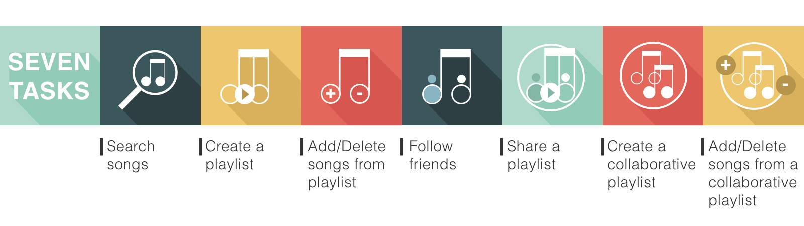

While driving in the real world, there are N number of things one has to take into consideration to drive comfortably and to avoid accidents. People often use dashboard displays for car status information, navigational aids (such as a phone or GPS device) for road directions and center console instruments for climate control, audio adjustments, and collision detection/avoidance.
Due to the various streams of information the users are processing, and the rate and amount of accommodation, we* feel that a HUD type system based on icons and colors is best suited to assist a driver for maximum information display.
*Team Members: Shanglei Z., James M., Nomaan A., Rehab T. and Nitya R.

Click to download the full version of the HUD final paper "An Iconographic Approach to Heads Up Display in Automobile".
Click to downloadSpotify is a music streaming service that allows you to listen to millions of songs from a large variety of artists and albums. Some of its features include: creating and sharing a playlist, following your friends, enabling collaboration on playlists to share them with friends.
Although Spotify is a great product, there is room for improvement. Our team identified some existing issues and has suggested recommendations for Spotify that could make it more intuitive and give music lovers a rewarding experience, both in desktop and mobile application.
Site Map for Spotify Desktop App
Site Map for Spotify Mobile App
Before the usability test, we performed a qucik expert review to identify potential issues of spotify, and based on the findings we generated seven tasks, such as Search Songs, Create a Playlist, Add/Delete songs from a playlist, Follow Friends, Share Playlist, and Create Collaborative Playlist.
Usability Testing Tasks
10 participants were recruited to complete those tasks on both the web and mobile application. All users completed a post-task comfort rating as well as pre-test and post-test questionnaire to collect demographical data and assess the overall usability of Spotify (SUS score). After performing a competitive analysis between the Spotify Desktop and Mobile application we generalized results between both platforms.
To ensure the efficiency of our usability test, we conducted a pilot study before the full-scale test.
Our Hypothesis is that users will value the use of iconography and color over plain text when displaying information in a HUD. Iconography will display important and relevant information more quickly compared to plain text. The users will have a more organic connection to icons rather than plain text. We also feel that color will help to inform the users of the current state of the information.
Methodology
Our team did a competitive comparison of the Spotify desktop application versus the mobile application. For mobile, we primarily focused on the iOS platform. We also performed the entire test using the free version.
Experimental Procedure
A total of 10 users participated in the study. All users tested the desktop application as well as the mobile application. Users were from a variety of backgrounds that included undergraduate students, graduate students, and working professionals.
Experimental Setup
The majority of sessions took place in the study/conference rooms available in the library and the UITS lab. Other testing sessions took place at the participant's house or place of employment.
Participants
User testing took place from November 9 through November 21, 2015.
You’re planning to go on a road trip with some friends. And what’s a road trip without some great music? You decide to make a playlist so that you and your friends can collaborate.
Antonia started using Spotify recently. She’s planning to go on a road trip with some friends and wants to create a playlist with songs from their favorite band. She also wants to share it with them.
Andy has been using Spotify for a couple of years. He wants to follow his colleagues and fellow musicians to see the music they are sharing. He also wants to update his notification settings to determine who will see his activity. No real need to do the how to follow sections on this profile as it will be the same results as with Antonia.